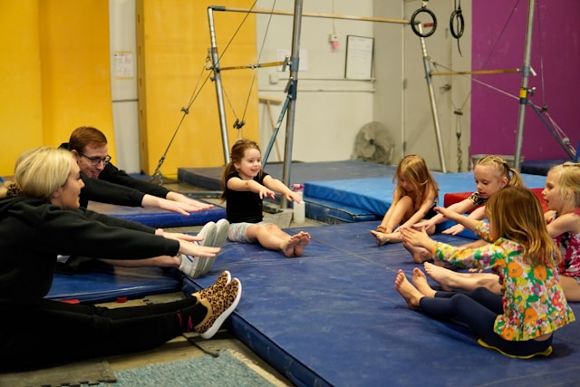
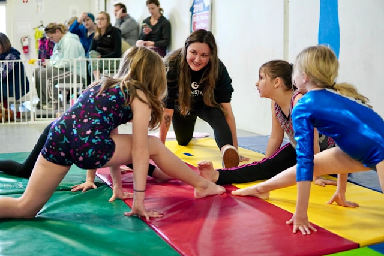

Our center is intentionally designed with the well-being of the entire family in mind. Caring for a child with unique developmental and sensory needs can be incredibly rewarding, but it can also bring challenges that affect parents, siblings, and caregivers. That is why our vision extends beyond therapy alone. Through wellness coaching, family-centered support, social opportunities, and enrichment programs, we aim to nurture resilience, connection, and overall wellness for everyone involved.
Our licensed speech-language pathologists work with children experiencing articulation disorders, phonological delays, fluency challenges (stuttering), voice disorders, and apraxia of speech. We use play-based, motivating techniques to make each session engaging.

We address both expressive language (how children communicate) and receptive language (how they understand). Services include vocabulary building, sentence structure, narrative skills, and augmentative & alternative communication (AAC) support.

Our OTs help children develop fine motor skills, handwriting, sensory processing, self-care routines, and school readiness. We use a sensory integration framework and collaborate closely with families and teachers.

Feeding challenges can be stressful for the whole family. Our specialists address oral motor delays, texture sensitivities, safe swallowing, and mealtime behavior using evidence-based approaches including the SOS Feeding Approach.

Our licensed physical therapists help children build strength, balance, coordination, and gross motor skills for everyday movement and play. We treat developmental delays, torticollis, gait abnormalities, and low muscle tone using play-based exercises that keep kids engaged while they build the skills to run, jump, climb, and explore with confidence.

Our expressive arts classes use music, movement, and visual art to help children build fine motor skills, self-expression, and social confidence in a relaxed, supportive group setting. Led by therapists trained in creative interventions, each class meets children where they are — encouraging creativity while reinforcing therapeutic goals in a fun, low-pressure environment.
Our pediatric yoga classes introduce children to breathing exercises, gentle movement, and mindfulness techniques that support self-regulation, body awareness, and calm. Taught by instructors trained in working with children with sensory and developmental differences, each session blends playful poses with relaxation strategies kids can carry into daily life.
Our sensory gym offers scheduled open-play sessions in a specially designed space filled with swings, climbing structures, and tactile equipment that support sensory regulation and gross motor development. Supervised by our clinical team, open play gives children a safe place to explore movement and sensory input at their own pace, while parents connect with other families.

Family wellness coaching supports parents and caregivers with practical strategies, education, and emotional support as they navigate their child's therapy journey. Sessions cover managing challenging behaviors, building routines, self-care for caregivers, and connecting with community resources — because when families are supported, children thrive.
Give us a visit! Schedule your free consultation today. No referral needed.